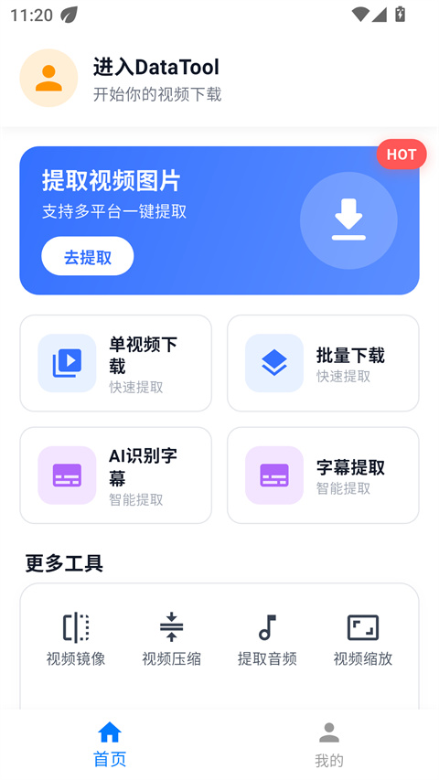
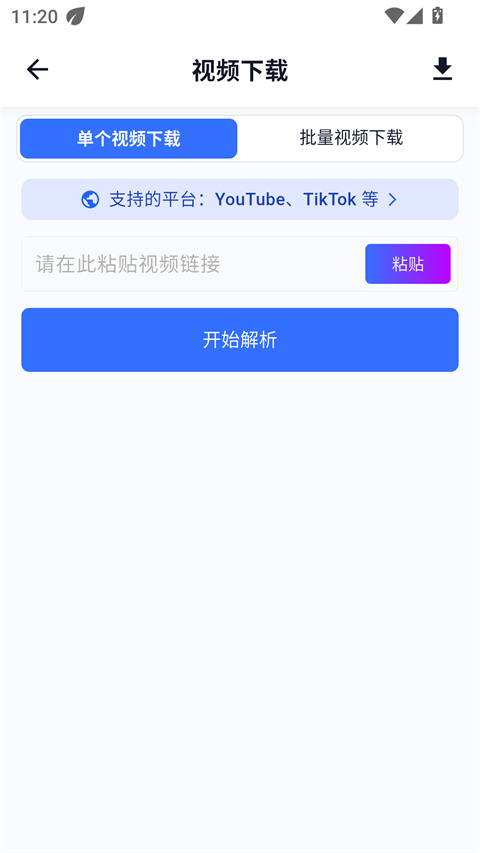
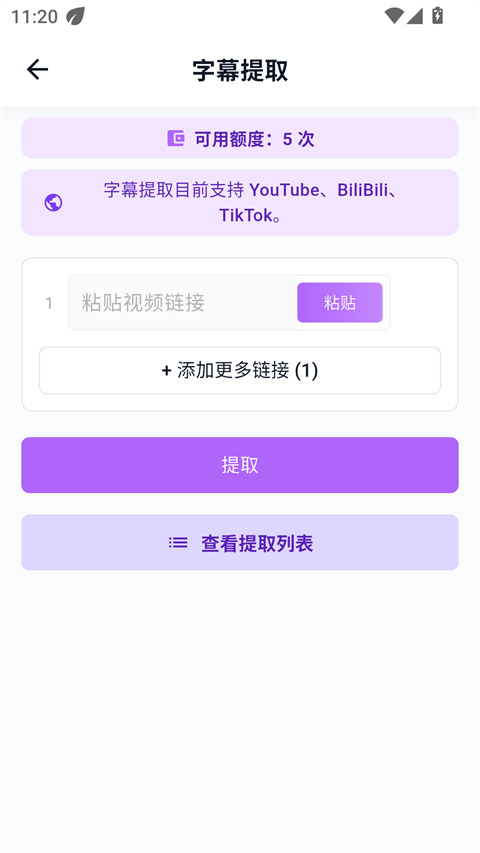

DataTool 安卓端上手实战：从粘链接到产出可用素材的完整流程
用 DataTool 把视频链接变成干净的无水印画面加字幕文本，跟着这篇教程走一遍，你能独立完成从注册下载到音视频合并的整条流水线。
这篇教程带你从零跑通 DataTool 安卓端的完整流程，它的官网有更详细的功能清单——结束时你能独立完成「粘链接 → 解析下载 → 提字幕 → 后处理」整条素材流水线，知道文件落在哪、额度怎么算、常见卡点怎么绕。
准备：装包与账号
先把 DataTool 安卓端装到手机上。安装包从下载渠道拿，装好后首次打开，首页会弹一个简要引导，跳过直接进主界面就行。
关于账号：DataTool 用邮箱注册，不绑手机号、不接第三方，这一点对在意隐私的人挺友好。未登录状态下，粘链接、解析、下载这三步基本能用；但字幕提取的每日次数和 AI 识别的分钟数都挂在账号下计量，不登录就看不到额度状态。建议注册完登录上，省得后面字幕功能用不了还纳闷。
注册登录的入口在首页右下角「我的」，点进去顶栏有「您还未登录」，点它进登录页，切换标签就能注册。密码别和其他重要账号复用，这是通用安全习惯。登录状态异常时，先退账号重登一遍，八成能自愈。

第一步：粘链接解析，拿到干净画面
主界面最显眼的就是那个粘贴框——把视频链接粘进去，点「解析」。解析过程是在服务端跑的，手机端只是等结果，网络稳定的话几秒就能出结果列表。
解析完成后，结果列表会列出可用的画质档位，从 1080P 到 4K 不等，具体上限看源视频本身。每一条旁边有「下载」按钮，点它开始拉到本地。单条下载适合先试一个看看效果，确认解析链路正常。
批量场景的话，点首页的批量入口，一次粘多条链接，顺序解析、顺序下载，省去反复手动操作。批量模式下，每条任务的状态列会实时刷新——解析中、下载中、完成、失败，一眼能看清哪条掉了链子。

第二步：字幕双轨，按视频类型选路线
下载只是拿到画面，素材要「可用」还差一层文本——字幕。DataTool 给了两条路，按源视频自带不自带字幕轨来选：
有字幕轨的视频（比如 YouTube、BiliBili、TikTok 这类平台），走「字幕提取」直接抽现成文本。这一路不费 AI 额度，属于白嫖能力。操作时进入字幕工作台，选提取模式，点开始就行，结果是一份纯文本稿。
没有字幕轨的口播、访谈、讲书类素材，走「AI 识别字幕」，让机器听一遍音频转写成文字。这一路吃每日免费额度（30 分钟），所以批量跑之前先在「我的」页面看一眼剩余时间，别跑到一半断粮。
两条路线产出的文本稿都可以在编辑器里手动修正，识别不准的地方改几个字就行。修完别忘了点保存，文本稿默认和视频存在同一位置，方便后续合并用。

第三步：后处理——把素材整成最终形态
下载加字幕之后，工具箱里的四个功能是收尾：音视频合并、提取音频、视频压缩、视频镜像/缩放。最常用的是前两个，说一下合并。
进入音视频合并页面，选好「要保留的视频轨」和「要叠加的音频轨」——通常就是刚下载的画面加字幕轨合成的音频。合并完成后，界面会明确提示「合并后的视频会保存到系统相册」，所以合并完直接开手机相册就能找到最终文件，不用再去 App 里翻。
其他三个功能按需用：压缩适合大体积素材往网盘传之前瘦身；提取音频是只留声音做播客素材；镜像和缩放用来适配不同平台的画幅要求。工具箱里每个功能的参数细节都可以去DataTool文档翻看。

新手最容易翻车的三个地方
文件去哪了？别急着慌
DataTool 安卓端的产物默认进系统相册，不是 App 自己的私有文件夹。很多人第一次下载完就去「文件管理」里按目录翻，翻半天找不到——打开相册，按时间排序拉到最新一条，八九不离十。只有提取音频这类产物可能落在下载目录，相册找不到再去下载文件夹看一眼。
解析失败，先查这三件事
第一，链接形态对不对。有些平台分享出来的链接是短链或跳转链接，直接粘进去可能解析不到——把短链展开成完整的视频页面 URL 再试。第二，网络切换一下。某些 Wi-Fi 对解析通道的访问有限制，关掉 Wi-Fi 用流量重试往往能过。第三，隔几小时再试一次。解析通道偶尔会有临时性故障，不是你的问题，等一等自愈。
AI 字幕跑一半没额度了
每日 30 分钟是硬限制，跑之前在「我的」页面先看剩余时间。批量跑多条长视频时，算一下总时长够不够，不够的话把几条先手动用字幕提取走 AI 路线的视频排到第二天再跑，省得中途断了还要返工。
进阶：多端配合与资料整理
DataTool 有 Windows、Mac 桌面客户端和网页版，各端用同一邮箱账号登录，字幕额度、下载记录、素材目录都能跨端同步。桌面端的好处是下载路径可以在设置里手动指定，习惯把素材集中到固定硬盘的人，装客户端第一件事就改下载目录。
关于资料来源：DataTool 的软件本体、版本说明和各平台的详细参数，在 GitHub、Gitee、GitCode 三个仓库里都有同步维护的完整目录——国内访问不稳定时切去镜像仓库就能拿到。